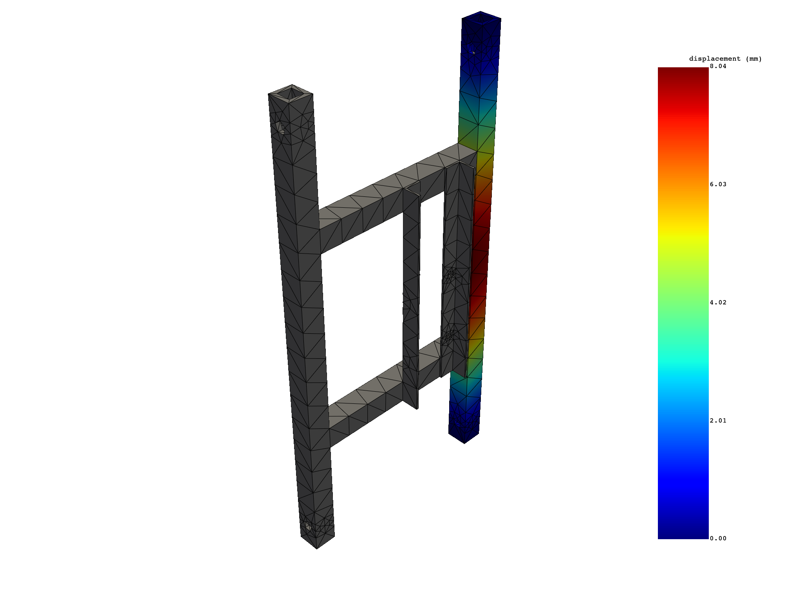
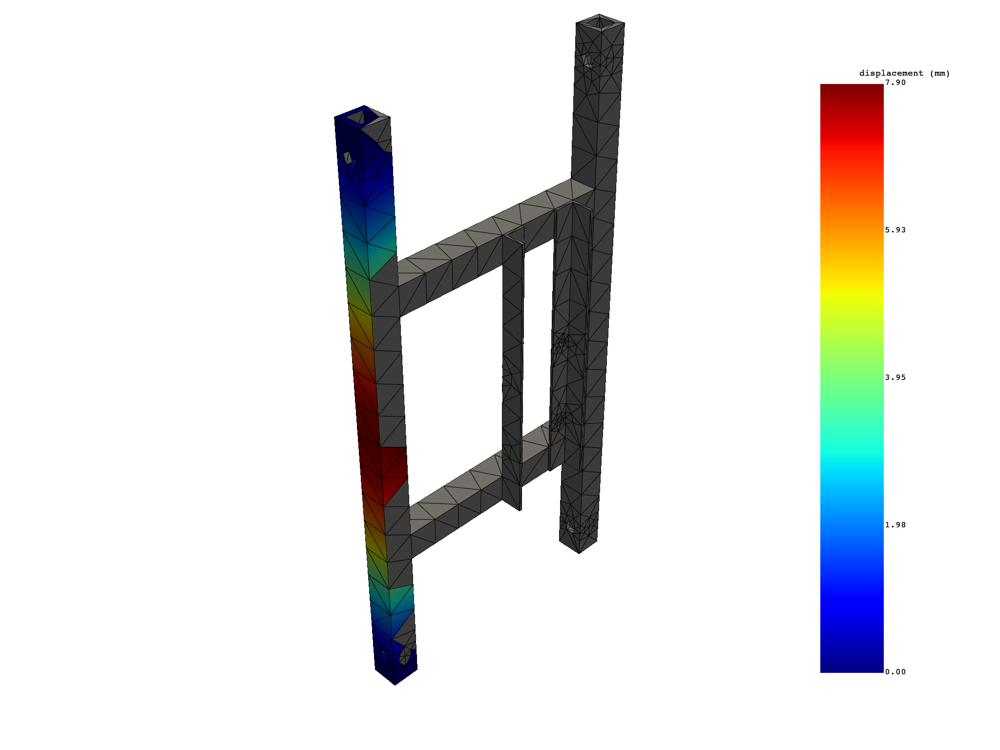
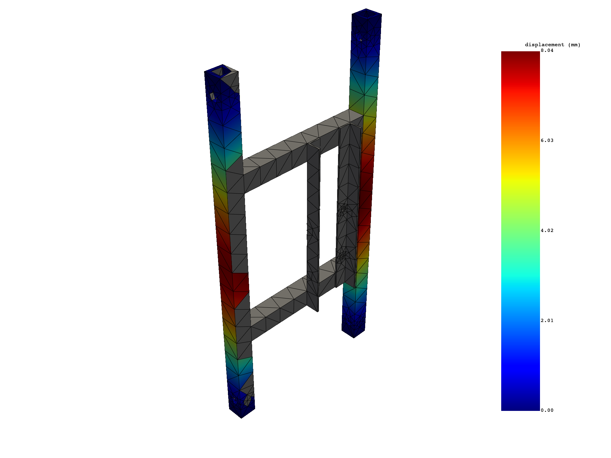

Note
Go to the end to download the full example code
Extract results on named selections - Modal Simulation#
In this script static simulation is processed to extract results like stress, displacement. Selecting sub parts of the results by scoping on specific nodes, elements is also displayed here.
Perform required imports#
Perform required imports. # This example uses a supplied file that you can
get by importing the DPF examples package.
from ansys.dpf import post
from ansys.dpf.post import examples
Get Simulation object#
Get the Simulation object that allows access to the result. The Simulation
object must be instantiated with the path for the result file. For example,
"C:/Users/user/my_result.rst" on Windows or "/home/user/my_result.rst"
on Linux.
example_path = examples.download_modal_frame()
# to automatically detect the simulation type, use:
simulation = post.load_simulation(example_path)
# to enable auto-completion, use the equivalent:
simulation = post.ModalMechanicalSimulation(example_path)
# print the simulation to get an overview of what's available
print(simulation)
Modal Mechanical Simulation.
Data Sources
------------------------------
/opt/hostedtoolcache/Python/3.8.17/x64/lib/python3.8/site-packages/ansys/dpf/core/examples/result_files/modal/frame.rst
DPF Model
------------------------------
Modal analysis
Unit system: NMM: mm, ton, N, s, mA, degC
Physics Type: Mechanical
Available results:
- displacement: Nodal Displacement
- stress: ElementalNodal Stress
- elastic_strain: ElementalNodal Strain
------------------------------
DPF Meshed Region:
5886 nodes
2842 elements
Unit: mm
With solid (3D) elements
------------------------------
DPF Time/Freq Support:
Number of sets: 6
Cumulative Frequency (Hz) LoadStep Substep
1 253.615690 1 1
2 317.918491 1 2
3 329.825709 1 3
4 575.619678 1 4
5 621.973976 1 5
6 667.364882 1 6
Get the available named selections#
print(simulation.named_selections)
['BAR_1', 'BAR_2', 'FACES_INTERIOR_PINS', '_FIXEDSU']
Extract displacements on named selections#
bar1_tot_displacement = simulation.displacement(named_selections=["BAR_1"], norm=True)
print(bar1_tot_displacement)
bar1_tot_displacement.plot()
bar2_tot_displacement = simulation.displacement(named_selections=["BAR_2"], norm=True)
print(bar2_tot_displacement)
bar2_tot_displacement.plot()
# both
tot_displacement = simulation.displacement(
named_selections=["BAR_1", "BAR_2"], norm=True
)
print(tot_displacement)
tot_displacement.plot()
- 
- 
- 
results U_N (mm)
set_ids 1
node_ids
72 6.2179e-01
73 5.0563e-01
74 2.4093e-01
75 2.2909e-01
76 4.8153e-01
77 4.7876e+00
... ...
results U_N (mm)
set_ids 1
node_ids
17 5.0483e-01
18 7.7196e-01
19 1.2061e+00
20 2.1481e+00
21 3.3862e+00
22 0.0000e+00
... ...
results U_N (mm)
set_ids 1
node_ids
72 6.2179e-01
73 5.0563e-01
74 2.4093e-01
75 2.2909e-01
76 4.8153e-01
77 4.7876e+00
... ...
Extract stress and averaged stress on named selections#
eqv_stress = simulation.stress_eqv_von_mises_nodal(named_selections=["_FIXEDSU"])
print(eqv_stress)
# without selection
elemental_stress = simulation.stress_elemental(named_selections=["BAR_1"])
print(elemental_stress)
elemental_stress.plot()
results S_VM (MPa)
set_ids 1
node_ids
22 8.0765e+02
349 1.0934e+03
15 1.0859e+03
371 7.3710e+02
406 3.4030e+02
408 4.1398e+02
... ...
results S (MPa)
set_ids 1
element_ids components
1137 XX 2.1033e+02
YY 1.4585e+02
ZZ 6.4862e+02
XY 7.8062e+00
YZ 3.9888e+01
XZ 1.3070e+01
... ... ...
Total running time of the script: ( 0 minutes 2.287 seconds)